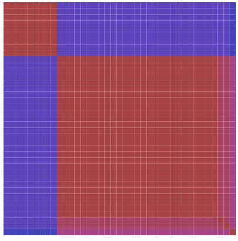
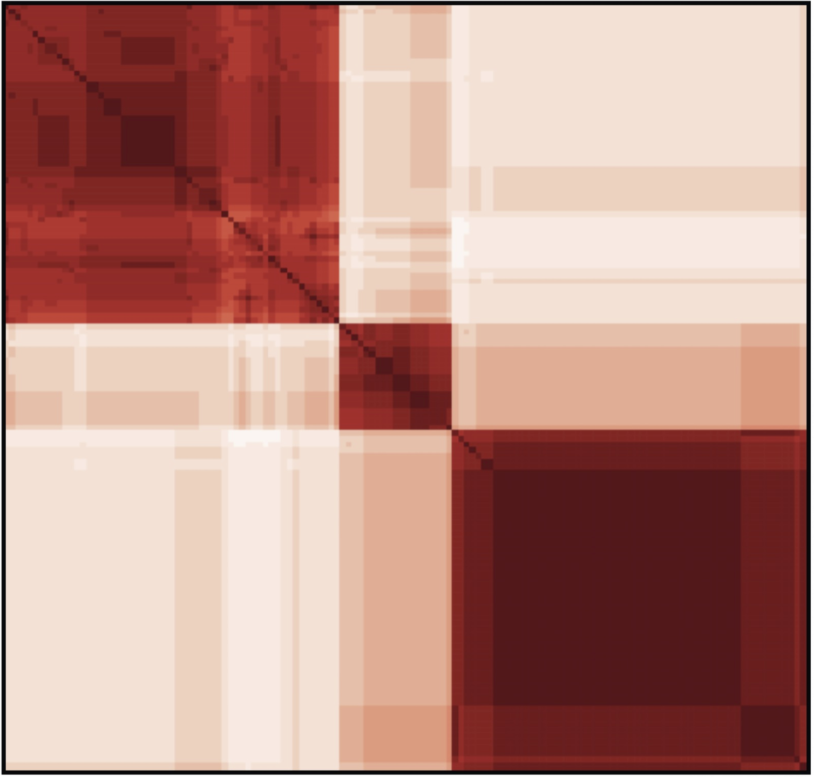

<!-- my-page.html --> 
<script src="https://rawcdn.githack.com/oscarmorrison/md-page/master/md-page.js"></script><noscript>
  
## Frequently Asked Questions

### Q1: What is CoMa?

CoMa (short for **Co**nspecificity **Ma**trices) is a web tool that takes as input a partition matrix (comprising one column per partition and one line per individual) and returns a conspecificity matrix (i.e., a *n* x *n* matrix, where *n* stands for the number of individuals in your dataset, in which each cell contains the conspecificity score for the corresponding pair of individuals).
  
### Q2: How should the input partition matrix be formatted?
The partitions matrix should be a tab-delimited file comprising one column per partition and one line per individual. Each column contains 1 for each individual belonging to species 1 for this partition, 2 for each individual belonging to species 2 for this partition, etc. Optionally, users can give a weight to each partition by adding a number directly below each column. Here is one [example](partition_example.tsv) of such matrix (with a weight of 10 for each partition). The partition matrix may be generated by hand or using a programme such as [HaplowebMaker](https://eeg-ebe.github.io/HaplowebMaker/).
  
### Q3: What are the different options available in CoMa?
At present there are only two options, which differ in the way the conspecificity scores are computed. Option zero (by default) computes the conspecificity score of a given pair of individuals as the number of partitions according to which they belong to the same species minus the number of partitions according to which they belong to two different species. Option one, by contrast, computes the conspecificity score of a pair of individuals as the number of partitions that consider them as conspecific. Option 1 was the original formula used in [Debortoli et al. (2016)](https://doi.org/10.1016/j.cub.2016.01.031), whereas option zero (the current default) was implemented one year later in [Johnston et al. (2017)](https://doi.org/10.1038/s41598-017-06085-3) as it provides a better way to deal with missing data.
  
### Q4: What sort of outputs does CoMa generate?
CoMa generates two outputs: a SVG representation of the ordered conspecificity matrix, as well as a tab-delimited version of the matrix that users can download before clustering them the way they want, for instance using the R package heatmap3 [(Zhao et al. 2014)](https://doi.org/10.1186/1471-2105-15-s10-p16). Here is an exemple of R code for doing so:
````R
library(heatmap3)
m=read.table("CoMa.tsv", header=TRUE)
ma<-as.matrix(m)
pdf(file='clusteringWardalldataWR.pdf')
heatmap3(ma, cexRow=0.1, cexCol=0.1, revC=TRUE, col= colorRampPalette(c("white", "red"))(9), method="ward.D", hclustfun= hclust, symm=TRUE)
dev.off() 
pdf(file='clusteringWardalldataBR.pdf')
heatmap3(ma, cexRow=0.2, cexCol=0.2, revC=TRUE, col=colorRampPalette(c("blue", "red"))(1000), method="ward.D", hclustfun=hclust, symm=TRUE)
dev.off()
quit()
````

### Q5: How to interpret the output of CoMa?
In the simplest case when all partitions agree, each species is revealed as a clear-cut square of high conspecificity scores along the diagonal of the conspecificity matrix. This is for instance the case in the bonobo/chimp example from [Dellicour & Flot (2015)](https://doi.org/10.1093/sysbio/syu130): even though the dataset comprises three subspecies of chimpanzees (which most multi-locus species delimitation approaches would mistake for different species), the conspecificity matrix obtained from a haploweb analysis of 12 independant nuclear markers reveals two clear-cut species, one comprising the 30 chimpanzee individuals sequenced (10 per subspecies) and the other one comprising the 9 bonobo individuals sequenced.
                 

                 

                           
A slightly less clear-cut conspecificity matrix can be found in a recent study of giraffes by [Petzold & Hassanin (2020)](https://doi.org/10.1371/journal.pone.0217956): despite a bit of conspecificity signal outside of the diagonal (indicating sequences shared across species for some loci, possibly due to lack of resolution or to introgression of the markers responsible), it clearly shows three squares of high conspecificity scores along the diagonal, separated from other clusters by low conspecificity scores. This reveals that there are three species of giraffes in Petzold & Hassanin's dataset.




